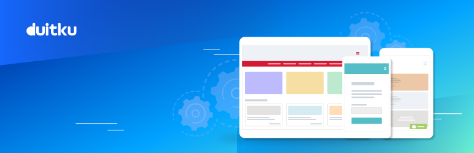

Duitku Payment Acquirer
Duitku Integration for Odoo payment acquirer
Do you want the best solution to accept Credit Cards, e-wallet, and Various Bank Transfers on your website? Our Payment Gateway for payments integrates with your e=commerce and lets you accept those payments through our payment gateway.
Securely accept major credit cards, View and manage transactions from one convenient place – your Duitku dashboard.